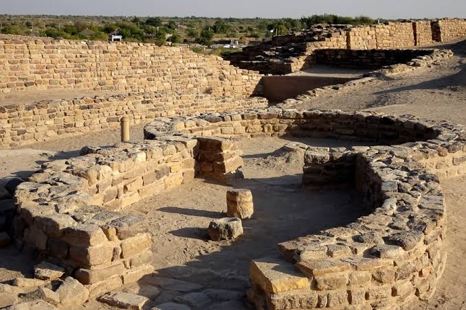
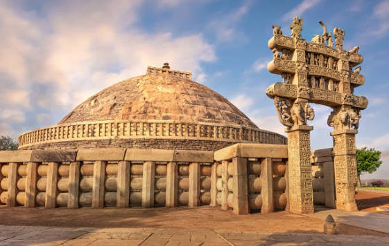
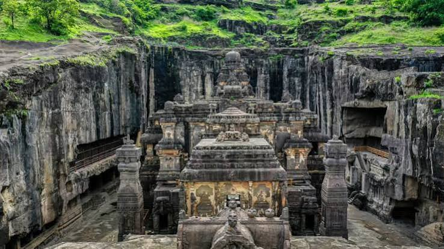
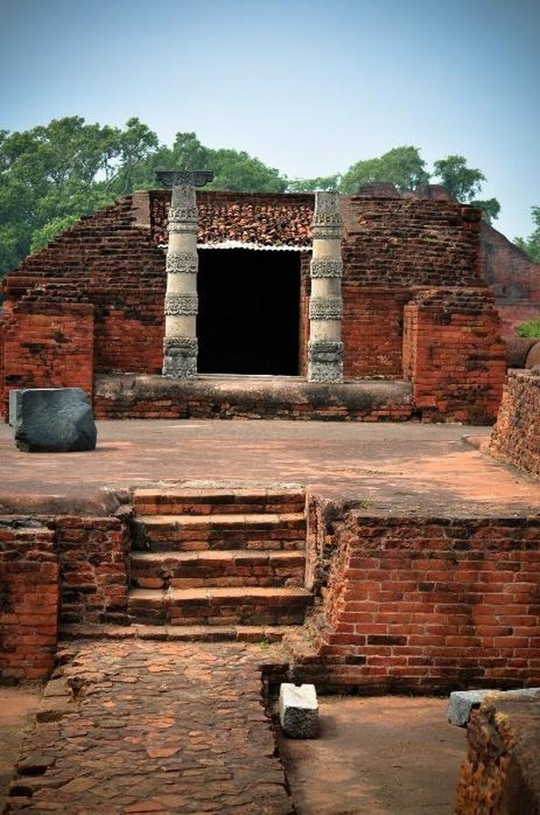
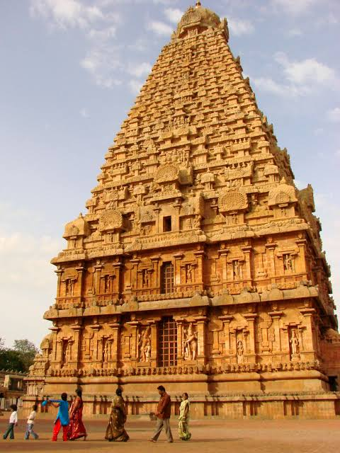
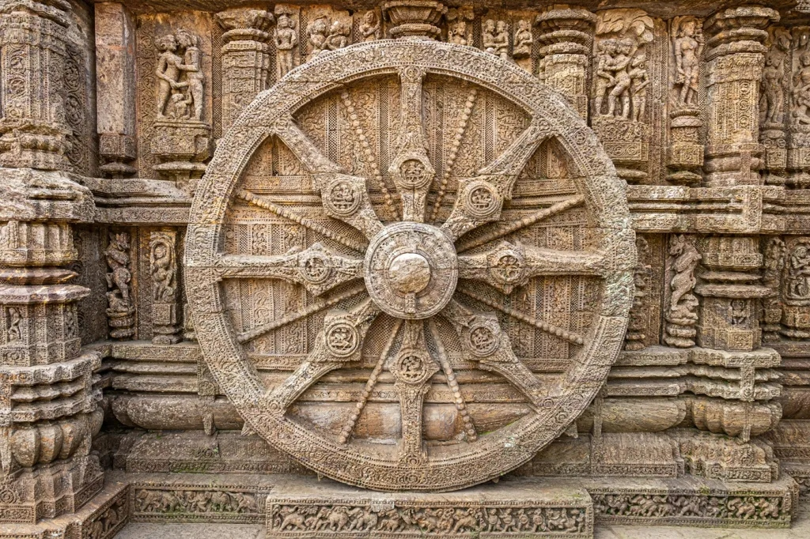
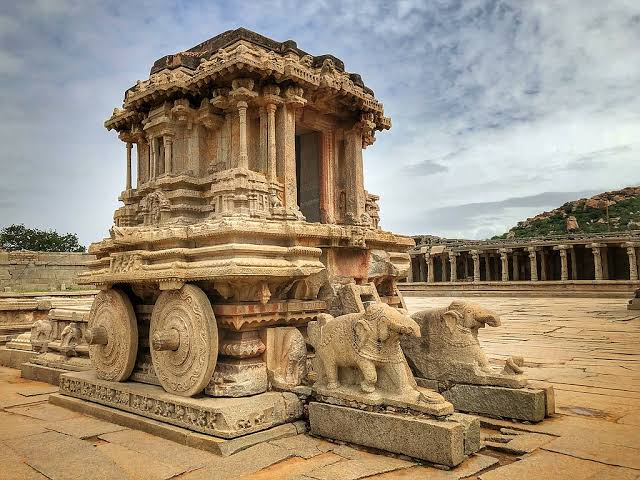

Subcontinent Heritage Timeline
Milestones across Indus Valley, Vedic Era, Mauryan Empire, Chola Maritime Realm, Mughal Golden Age, and Modern Era.

Indus Valley Civilization & Urbanism
Advanced water management reservoirs at Dholavira, grid-planned brick metropolises of Harappa and Mohenjo-daro, standard weights, and copper seal script.

Mauryan Empire & Emperor Ashoka
Pan-Indian unification under Chandragupta Maurya, construction of the Great Sanchi Stupa, and Ashoka's bilingual Dhamma rock and pillar edicts promoting non-violence.

Ajanta & Ellora Cave Murals
Rock-cut Buddhist chaitya halls and viharas carved into basalt cliffs of the Deccan, world-renowned for master tempera murals depicting the Jataka tales.

Nalanda University & Classical Arts
The ancient residential university in Magadha attracting scholars from across Asia, alongside the zenith of classical Indian mathematical, epigraphic, and sculpture traditions.

Great Living Chola Temples
Raja Raja Chola I constructs Brihadeeswarar Temple in Thanjavur featuring an 80-tonne granite monolithic capstone, monumental gopurams, and bronze Nataraja castings.

Sun Temple of Konark
King Narasimhadeva I of Eastern Ganga dynasty commissions the monolithic cosmic chariot temple with 24 carved stone wheels on the Bay of Bengal coastline.

Vijayanagara Empire & Hampi
Spectacular Dravidian stone chariot at Vittala Temple, grand bazaar colonnades, and civil hydraulic engineering along the boulder-strewn Tungabhadra River.
Construction of the Taj Mahal
Mughal Emperor Shah Jahan erects the world-famous white Makrana marble mausoleum in Agra, featuring symmetrical charbagh gardens and semi-precious pietra dura inlays.